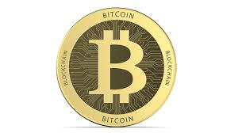

Blockchains
A blockchain is a distributed database that is shared among the nodes of a computer network. As a database, a blockchain stores information electronically in digital format. Blockchains are best known for their crucial role in cryptocurrency systems, such as Bitcoin, for maintaining a secure and decentralized record of transactions. The innovation with a blockchain is that it guarantees the fidelity and security of a record of data and generates trust without the need for a trusted third party.One key difference between a typical database and a blockchain is how the data is structured. A blockchain collects information together in groups, known as blocks, that hold sets of information. Blocks have certain storage capacities and, when filled, are closed and linked to the previously filled block, forming a chain of data known as the blockchain. All new information that follows that freshly added block is compiled into a newly formed block that will then also be added to the chain once filled.A database usually structures its data into tables, whereas a blockchain, like its name implies, structures its data into chunks (blocks) that are strung together. This data structure inherently makes an irreversible time line of data when implemented in a decentralized nature. When a block is filled, it is set in stone and becomes a part of this time line. Each block in the chain is given an exact time stamp when it is added to the chain.

Bitcoin
Bitcoin is a decentralized digital currency created in January 2009. It follows the ideas set out in a white paper by the mysterious and pseudonymous Satoshi Nakamoto.12 The identity of the person or persons who created the technology is still a mystery. Bitcoin offers the promise of lower transaction fees than traditional online payment mechanisms do, and unlike government-issued currencies, it is operated by a decentralized authority.Bitcoin is known as a type of cryptocurrency because it uses cryptography to keep it secure. There are no physical bitcoins, only balances kept on a public ledger that everyone has transparent access to (although each record is encrypted). All Bitcoin transactions are verified by a massive amount of computing power via a process known as "mining." Bitcoin is not issued or backed by any banks or governments, nor is an individual bitcoin valuable as a commodity. Despite it not being legal tender in most parts of the world, Bitcoin is very popular and has triggered the launch of hundreds of other cryptocurrencies, collectively referred to as altcoins. Bitcoin is commonly abbreviated as BTC when traded.
NFTs